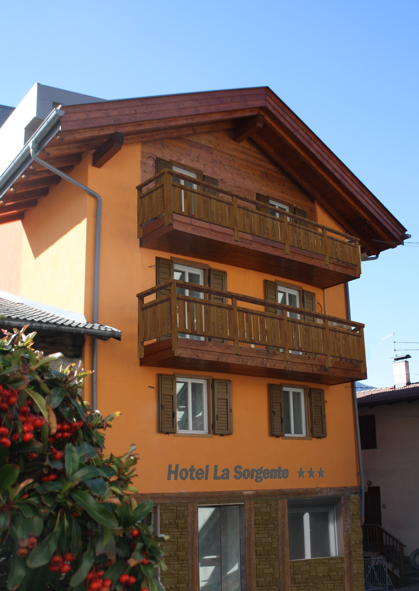

    <!-- ******ABOUT****** --> 
    <section id="hotel" class="about section">
        <div class="container">
            <h2 class="title text-center">L'HOTEL<br></h2>
            
            <p class="text-center right-text">Sarete i  benvenuti nel nostro nuovissimo hotel, nato da una recente ristrutturazione.
Uno scrigno di benessere incastonato nel centro storico di Tesero, in Val di Fiemme, nel cuore delle Dolomiti, luogo ideale per tutti i tipi di vacanza, all’insegna del relax ma allo stesso tempo del divertimento.</p>
<div class="clear"></div>
            <div class="row margin-top">
                <div class="item col-md-6 col-sm-9 col-xs-12">
                    <div class="icon-holder">
                        <i class="fa fa-tint"></i>
                    </div>
                    <div class="content">
                        <h3 class="sub-title">“La Sorgente”</h3>
                        <p> L’hotel si trova in località Benesin, un rione del paese di Tesero che in passato era conosciuto per le sue molti sorgenti d’acqua che lo attraversavano.</p>
                    </div><!--//content-->
                </div><!--//item-->
                <div class="item col-md-6 col-sm-9 col-xs-12">
                    <div class="icon-holder">
                        <i class="fa fa-book"></i>
                    </div>
                    <div class="content">
                        <h3 class="sub-title">La storia racconta che…</h3>
                        <p><i>"Un insediamento di maggior consistenza si sviluppò nell’area a nord intorno al bugnesin, un piccolo stagno (bugno) alimentato da una fresca sorgente (che esiste tuttora sotto l’hotel) da tempo utilizzato per l’abbeverata dei bestiami sui primitivi pascoli"</i></p>
                    </div><!--//content-->
                </div><!--//item-->
                
                      
              </div>    
                
        </div><!--//container-->
    </section><!--//about-->
